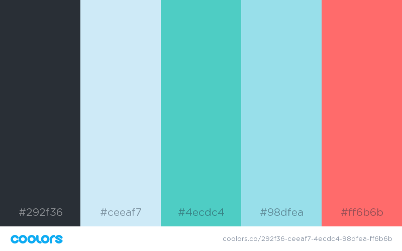

Color Scheme
The colors for the weather elements will be with the three blue/greens. This will include headlines and background colors. The headlines will be #4ecdc4 and the background color will bee #ceeaf7. The color, #98dfea will be for accent items. The activities section will use the coral color for its main items. The text will be with the black/gray throughout the whole webpage.